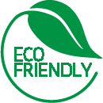

A-Z SUSTAINABILITY
Hey, we know there’s no such thing as being part eco-friendly! So our entire manufacturing process uses 95% LESS water and 20% LESS energy than others; And, our dyes are Oeko tex certified for environment safety.